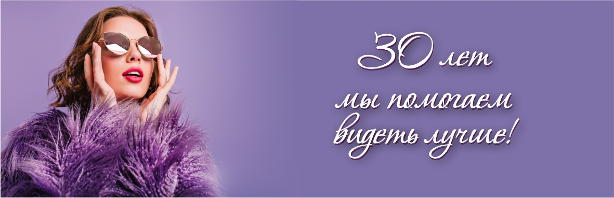

Московская, 71
БЦ «Лермонтов», офис 229, 2 этаж
Пенза
Пн–пт: 10:00–18:00 · Сб: 9:00–15:00
+7 (8412) 56-24-14Открыть на карте ↗Подберём очки, которые вам подходят.
Поможем разобраться в вопросах зрения.

Ваш взгляд. Ваш характер.Проверить зрение, выбрать новую оправу
или обсудить контактную коррекцию.
Приём офтальмолога в Пензе. Обсудите с врачом свои жалобы и вопросы о коррекции зрения.
02 / Очки и оправыПодбор оправ и изготовление очков различной сложности в салонах «Биком плюс» в Пензе.
03 / Контактные линзыМягкие, жёсткие и ночные контактные линзы в «Биком плюс». Подбор с учётом рекомендаций специалиста.
Подбор детских очков — с вниманием к рекомендациям врача и комфорту ребёнка.
О детских очкахВрач, очки или контактные линзы — найдите свою задачу в разделе услуг.
Уточните стоимость, расписание и подготовку к посещению.
Возьмите имеющиеся рецепты, результаты обследований и ваши очки.
БЦ «Лермонтов», офис 229, 2 этаж
Пенза
Пн–пт: 10:00–18:00 · Сб: 9:00–15:00
+7 (8412) 56-24-14Открыть на карте ↗Салон оптики
Пенза
Пн–пт: 10:00–18:00 · Сб: 9:00–15:00
+7 (8412) 99-00-53Открыть на карте ↗Салон оптики
Пенза
Время работы уточняйте по телефону
+7 (8412) 39-05-39Открыть на карте ↗От рецепта до удобной посадки: что учесть перед заказом очков.
Читать ↗02 / ПолезноеКакие вопросы подготовить и что взять с собой на приём.
Читать ↗03 / ПолезноеВнешний вид, материал и посадка — всё имеет значение.
Читать ↗Выберите удобный салон. По телефону можно уточнить стоимость, время приёма и записаться.
* По информации действующего сайта компании.